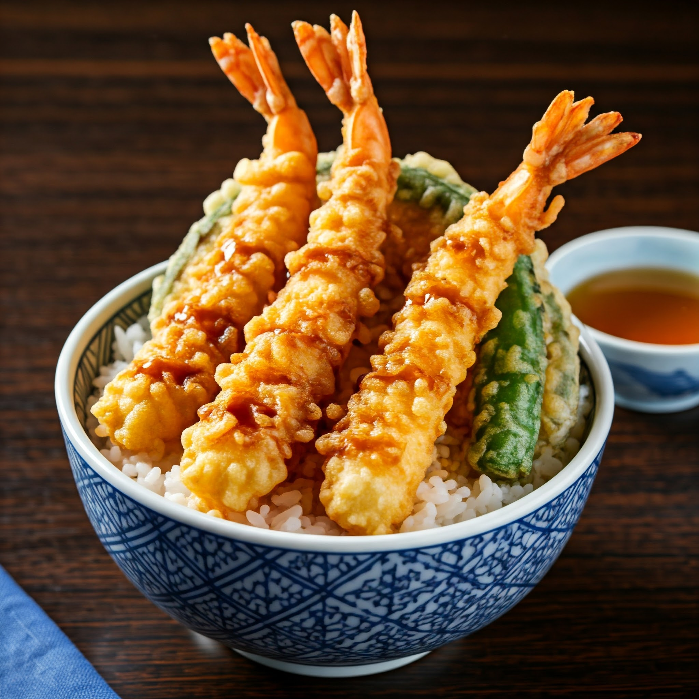

メニュー
そば・うどん・うなぎをはじめ、季節の日本料理を豊富に取り揃えております。
そば・うどん
| 商品 | 価格 |
|---|---|
| もりそば | 850円 |
| ざるそば | 880円 |
| かけそば | 680円 |
| もりうどん | 850円 |
| ざるうどん | 880円 |
| かけうどん | 680円 |


セットメニュー
| 商品 | 価格 |
|---|---|
| えび天丼とそば/うどんセット | 1,200円 |
| かき揚げ丼とそば/うどんセット | 1,100円 |
| サービスランチ（天ぷら・そば/うどん・半ライス・香の物） | 1,300円 |

ごはん
| 商品 | 価格 |
|---|---|
| 天ぷら定食 | 1,500円 |
| 玉子重 | 700円 |
| 親子重 | 850円 |
| 天丼 | 1,500円 |
| 並天重 | 1,200円 |
| 上天重 | 1,500円 |
| うな重 | 4,200円 |

